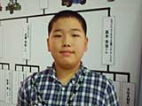

| #9 マリオカートアドバンス ＧＰ２００１ 優勝決定戦 イベントステージで繰り広げられた熱きレースバトル！ |
|
全国４ヶ所で行なわれた「マリオカートアドバンス ＧＰ２００１予選」。その激戦を勝ち上がってきた８名と、６月23、24日に開催されたワールドホビーフェアのプレ大会で優勝した４名、さらに、マリオカートモバイルＧＰの上位入賞者３名の合計15名で……、あ、もう１人いらっしゃいました。なんと、『GameWave』代表として伊集院光さんも参戦！ 「マリオカートアドバンス ＧＰ２００１」の優勝決定戦は、以上の合計16名で争われることになりました。果たして、優勝の栄冠は誰の手に渡るのか!? |
|
まずはセミファイナル。４人ずつ４グループに分かれてレースを行ない、各グループの１位のみが次のファイナルに進むことが出来ます。集まったギャラリーの声援がとどろく中、いよいよ第１試合がスタート！ イベントステージの大変な盛り上がりに、レーサーの皆さんは少々緊張気味のようですね。とはいえ、そこはさすがに激戦を勝ち抜いてきた猛者たち。レースは抜きつ抜かれつのデットヒートで、最後の最後まで熾烈なトップ争いが繰り広げられました。ちなみに、セミファイナルは150CC、キャラクターはランダム選択、コースはスペシャルカップ４コースから抽選で決定、という方式で行なわれます。 |
 さて、注目の伊集院さんは第４試合に登場。最初のメンバー紹介の時から得意の攻撃…、ならぬ口撃で会場を盛り上げてくれましたが、肝心のレースでは最下位を独走！ ＴＥＡＭマリオのメンバーが見守る中、ブッちぎりの４位で残念ながらファイナル進出はなりませんでした。 さて、注目の伊集院さんは第４試合に登場。最初のメンバー紹介の時から得意の攻撃…、ならぬ口撃で会場を盛り上げてくれましたが、肝心のレースでは最下位を独走！ ＴＥＡＭマリオのメンバーが見守る中、ブッちぎりの４位で残念ながらファイナル進出はなりませんでした。 |
|
そして、この第４試合を制したのは、伊集院さんから勝手にライバルに指名されて笑っていた高木くん。高木くんはなんと７才で、モバイルタイムアタックで３位に入賞したツワモノです。そして、そのモバイルタイムアタックで１位だったのは高木くんのお兄さん。ファイナルでの兄弟対決も期待されましたが、残念ながら第３試合に出場したお兄さんはファイナルに進むことができませんでした。それにしても、すごい兄弟ですね。 |
|
結局、ファイナルに進出したのは、めまぐるしく順位の入れ替わる第１試合を制した、大阪大会代表の川口くん。ショートカット勝負だった第２試合で優勝した札幌大会代表、近藤くん。最後の最後、まさにゴール直前での大逆転を見せた第３試合の優勝者、札幌大会代表堀内くん。そして、第４試合でライバル(？)の伊集院さんを見事に蹴散らした最年少のファイナリリスト、高木くん。以上の４名で、優勝決定戦が行なわれます。 |
|
ファイナルのコースは、フラワーカップのマリオサーキット。キャラクターはランダム選択です。司会のお姉さんの合図で、さあ、いよいよ最後の戦いの幕が切って落とされました。見事なスタートダッシュを決めたのは川口くんのキノピオ。続いてヨッシー、ドンキー、ピーチが続きますが、みんなさすがにコースを知りつくしている様子で、ほとんどミス無く快調に飛ばしています。結局、他の３人が争っている間に、キノピオが２周目以降、トップを独走！ そのままゴールして、お見事、川口くん(11才)の優勝です。おめでとう!! 優勝した川口くんには、トロフィーと賞状、それにニンテンドーゲームキューブの目録が贈られます。 |
|
 それでは、優勝した川口くんにインタビューしてみましょう。 ──優勝おめでとう！ 緊張しました？ 川口くん：レース前も、レース中もずっとドキドキしてました。優勝できてうれしいです。 ──普段からいっぱい練習してるんでしょ？ 川口くん：うーん、そうでもないですよ。ヒマなときに遊ぶくらいです。 ──本当？ それで優勝なんてすごいなぁ。予選は３回勝ち抜かなきゃいけなかったけど、もしかしてそれも１回で突破したのかな？ 川口くん：はい。午後の部に参加して、１回でクリアーしました。 ──そ、それはすごいですね。キャラクターやコースは、どれが来ても自信あったのかな？ 川口くん：コースはどれでも大丈夫。キャラクターは、マリオかキノピオが使いやすくて好きです。大阪予選の決勝も、今回のファイナルもキノピオだったので、それは良かったと思います。 ──じゃあ最後に、ゲームキューブが届いたら、最初に何のソフトを買いたいですか？ 川口くん：う〜ん、スマッシュブラザーズかな。 ──やっぱり(笑)。会場でもすごい人気でしたもんね。どうもありがとうございました。また大会が開かれるときは、ぜひ連続優勝を目指してくださいね。 |
| 前のレポートへ | 次のレポートへ |
|
|